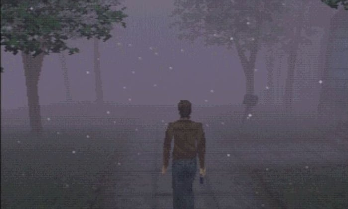
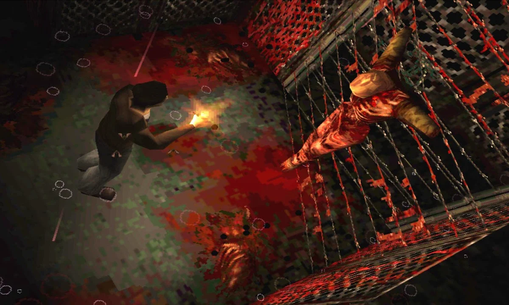

<!DOCTYPE html>
<html lang="es"></html>
<head>
    <meta charset="UTF-8">
    <meta name="viewport" content="width=device-width, initial-scale=1.0">
    <title>Silent Hill 1</title>
    <link rel="stylesheet" href="CSS/bootstrap.min.css">
    <link rel="stylesheet" href="CSS/css_pag1.css">
</head>
<body>
    <nav class="navbar navbar-expand-lg navbar-light" id="navigation">
        <a class="navbar-brand" href="index.html">Laboratorio 6 y Tarea 5</a>
        <div class="collapse navbar-collapse">
            <ul class="navbar-nav mr-auto">
                <li class="nav-item">
                    <a class="nav-link" href="pag1.html">Página 1</a>
                </li>
                <li class="nav-item">
                    <a class="nav-link" href="pag2.html">Página 2</a>
                </li>
                <li class="nav-item">
                    <a class="nav-link" href="pag3.html">Página 3</a>
                </li>
            </ul>
        </div>
    </nav>

    <div class="container mt-4">
        <div class="card">
            <div class="card-body">
                <h1 class="card-title">Silent Hill 1</h1>
                <p class="card-text">La primera entrega de Silent Hill es uno de mis juegos favoritos</p>
                
                <p class="card-text">
                    La ambientación de este juego es increíble, su diseño de sonido combinado con las limitaciones de su hardware crean una 
                    experiencia más que magnifica, aunque la historia no es su fuerte y los controles son toscos, llegando a ser de plano incómodos,
                    la música y la atmosfera son completamente inolvidables.
                </p>
                <audio id="audio" src="AUDIOS/03 - The Wait.mp3"></audio>
                <button id="btnaudio" class="btn btn-secondary" onclick="play()">Una demostración del diseño de sonido de Konami</button>
                
                <p class="card-text">
                    Los visuales para los estandares de nuestros tiempos no son increibles, pero en su momento
                    estos visuales eran la créme de la créme. El amor que le pusieron los desarrolladores a generar un
                    ambiente que te helara los huesos se nota en cada una de las escenas y el ambiente claustrofobico que tiene cada
                    una de las calles te abruma.
                </p>
                <p class="card-text">
                    Como experiencia personal, silent hill me generó constantes dolores de cabeza solamente con su música y su ambiente, 
                    jugar este juego no es solo una experiencia, es toda una tarea de supervivencia a la tensión.   
                </p>
                
                <a href="index.html" class="btn btn-secondary">Volver a la página principal</a>
            </div>
        </div>
    </div>
    <!--JS-->
    <script src="JS/bootstrap.bundle.min.js"></script>
    <script src="JS/JS_Pag1.js"></script>
</body>
</html>